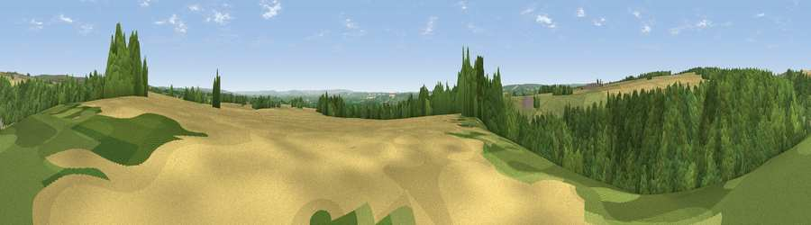

Viewpoint near Gillamoor
#17303 in England · top 38% of its area beats it · near GillamoorThe view, rendered

A 360° render of this exact spot computed from the terrain model, tree cover and land cover — summer colours, afternoon light, calibrated against photographs of famous viewpoints. Real trees, hedges and buildings will differ in detail.
The panorama
Grey silhouette: terrain skyline in each direction (720 bearings, Earth curvature and refraction included). Dashed green: skyline with trees (+15 m) and buildings (+8 m) as obstacles. Blue strip: how far the ground is visible on each bearing.
Where the view opens
Wedge length = distance to the farthest visible ground on that bearing (vegetation-aware). Rings at 10, 25 and 50 km.
What fills the view
67% woodland · 19% grassland · 14% cropland
Angular shares of the visible panorama (visual magnitude), not map area. Landscape diversity 0.38 (0–1 Shannon).
Key numbers
More beautiful places nearby
The staircase of upgrades: each row has a higher view potential than everything closer. Driving times are estimates from straight-line distance, calibrated against real road routing — check an actual route before setting out.
| Place | Direction | Drive | Score |
|---|---|---|---|
| Viewpoint near Gillamoor | NE · 1 km | ~2 min | 56.4 |
| Viewpoint near Gillamoor | NW · 2 km | ~5 min | 57.6 |
| Viewpoint near Gillamoor | N · 3 km | ~7 min | 72.8 |
| Viewpoint near Ampleforth | SW · 11 km | ~21 min | 76.6 |
| Viewpoint near Boltby | W · 16 km | ~28 min | 79.6 |
| Viewpoint near Thirlby | WSW · 16 km | ~28 min | 81.2 |
| Viewpoint near Thirlby | WSW · 16 km | ~28 min | 81.5 |
| White Hill | NNW · 19 km | ~32 min | 84.2 |
54.28266, -0.98200 · source: screening · position refined by local search. Computed location — check access rights before visiting.